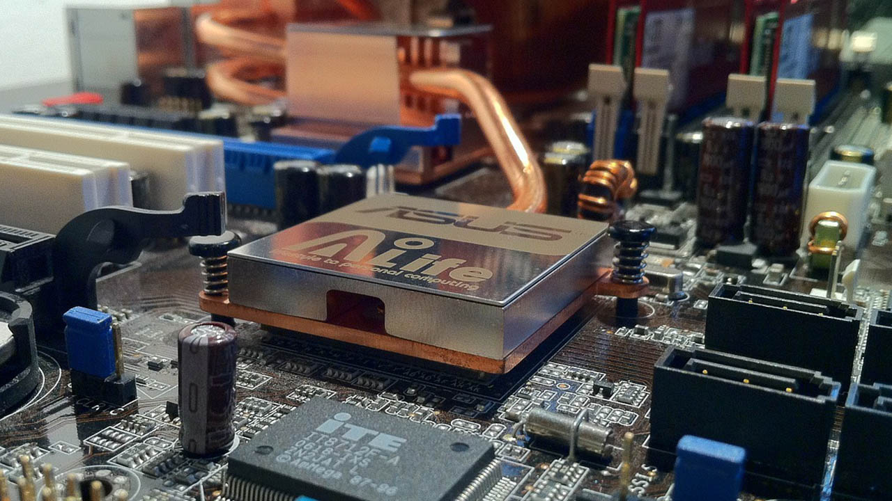

Pengertian Hardware: Apa Itu Hardware dan Bagaimana Fungsinya?
Hardware adalah salah satu komponen penting dalam sebuah komputer. Tanpa hardware, komputer tidak akan dapat berfungsi dengan baik. Hardware sendiri merupakan bagian dari komputer yang dapat dilihat dan diraba secara fisik, seperti monitor, keyboard, mouse, dan CPU. Pada artikel ini, kita akan membahas pengertian hardware secara lebih lengkap dan bagaimana fungsinya dalam sebuah komputer.
Hardware adalah komponen fisik yang membentuk sebuah komputer. Hardware terdiri dari berbagai macam komponen, seperti monitor, keyboard, mouse, CPU, RAM, hard disk, dan lain sebagainya. Setiap komponen hardware memiliki peran dan fungsi yang berbeda-beda dalam menjalankan sebuah komputer.
Jenis-jenis Hardware
Hardware dapat dikelompokkan menjadi beberapa jenis, antara lain:
1. Input Device
Input device adalah hardware yang digunakan untuk memasukkan data atau perintah ke dalam komputer. Contoh dari input device adalah keyboard, mouse, dan scanner.
2. Output Device
Output device adalah hardware yang digunakan untuk menampilkan hasil dari pengolahan data yang dilakukan oleh komputer. Contoh dari output device adalah monitor, printer, dan speaker.
3. Storage Device
Storage device adalah hardware yang digunakan untuk menyimpan data atau program dalam jangka waktu yang lama. Contoh dari storage device adalah hard disk, flash disk, dan CD/DVD.
4. Processing Device
Processing device adalah hardware yang digunakan untuk melakukan pengolahan data atau program. Contoh dari processing device adalah CPU dan GPU.
Fungsi Hardware dalam Komputer
Hardware memiliki peran yang sangat penting dalam menjalankan sebuah komputer. Berikut ini adalah beberapa fungsi hardware dalam komputer:
1. Input Data
Hardware input device seperti keyboard dan mouse digunakan untuk memasukkan data atau perintah ke dalam komputer.
2. Processing Data
Hardware processing device seperti CPU dan GPU digunakan untuk melakukan pengolahan data atau program yang telah dimasukkan ke dalam komputer.
3. Output Data
Hardware output device seperti monitor dan printer digunakan untuk menampilkan hasil dari pengolahan data yang telah dilakukan oleh komputer.
4. Storage Data
Hardware storage device seperti hard disk dan flash disk digunakan untuk menyimpan data atau program dalam jangka waktu yang lama.
Contoh Hardware dalam Komputer
Berikut ini adalah beberapa contoh hardware dalam komputer:
1. Monitor
Monitor adalah hardware output device yang digunakan untuk menampilkan hasil dari pengolahan data yang dilakukan oleh komputer. Monitor tersedia dalam berbagai ukuran dan jenis, seperti CRT, LCD, dan LED.
2. Keyboard
Keyboard adalah hardware input device yang digunakan untuk memasukkan data atau perintah ke dalam komputer. Keyboard tersedia dalam berbagai jenis dan bentuk, seperti keyboard standar dan keyboard gaming.
3. Mouse
Mouse adalah hardware input device yang digunakan untuk memasukkan data atau perintah ke dalam komputer. Mouse tersedia dalam berbagai jenis dan bentuk, seperti mouse optik dan mouse gaming.
4. CPU
CPU adalah hardware processing device yang digunakan untuk melakukan pengolahan data atau program yang telah dimasukkan ke dalam komputer. CPU tersedia dalam berbagai jenis dan kecepatan.
5. RAM
RAM adalah hardware processing device yang digunakan untuk menyimpan data sementara saat komputer sedang beroperasi. Semakin besar kapasitas RAM yang dimiliki, semakin cepat pula kinerja komputer.
6. Hard Disk
Hard disk adalah hardware storage device yang digunakan untuk menyimpan data atau program dalam jangka waktu yang lama. Hard disk tersedia dalam berbagai kapasitas dan kecepatan.
Kesimpulan
Dari penjelasan di atas, dapat disimpulkan bahwa hardware merupakan komponen fisik yang membentuk sebuah komputer. Hardware terdiri dari berbagai macam komponen, seperti monitor, keyboard, mouse, CPU, RAM, hard disk, dan lain sebagainya. Setiap komponen hardware memiliki peran dan fungsi yang berbeda-beda dalam menjalankan sebuah komputer.